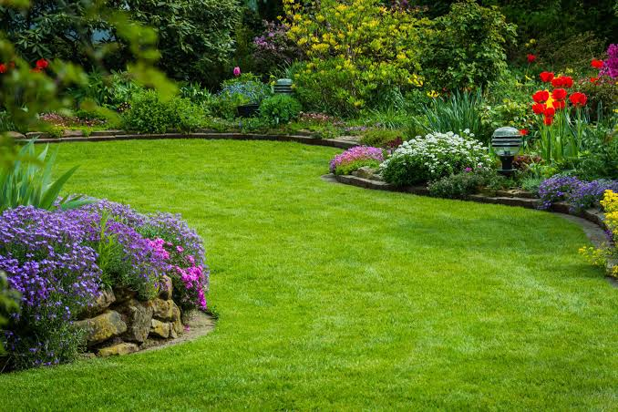

Jason
Garden Architect
Jason designs every landscape with creativity and purpose. From the first sketch to the final planting, he ensures each project reflects beauty, functionality, and harmony with nature.

Every thriving garden begins with a dream. Ours started with a passion for plants and a vision to transform ordinary spaces into extraordinary landscapes.

Lucky Shrub was founded in Tucson, Arizona, by husband-and-wife team Jason and Maria. United by their lifelong love for plants, they dreamed of creating a business that would help people reconnect with nature through thoughtful garden design.
What started as a small landscaping business has grown into a trusted garden design firm and plant nursery. Today, Lucky Shrub offers complete landscaping solutions, expert maintenance, and a carefully curated collection of indoor and outdoor plants.
Jason designs every landscape with creativity and purpose. From the first sketch to the final planting, he ensures each project reflects beauty, functionality, and harmony with nature.
Maria oversees the nursery and customer experience while leading the company's marketing efforts. She helps clients discover the perfect plants to create vibrant, lasting gardens.
We believe every landscape should respect and protect the environment.
Every project is designed to reflect the personality of the people who enjoy it.
We love helping families and businesses create greener, healthier outdoor spaces.
From premium plants to expert craftsmanship, quality is at the heart of everything we do.
"We don't just grow plants—we cultivate places where memories bloom."